Guides / Family
Guides for ages 8-10
34 family guides that fit learners aged 8-10. You lead, the AI tutors, and your learner does the thinking.

Make Friends and Speak Up

Learn Chess

Coding as Literacy

Master the Computer

Kids in the Kitchen

Make It Better

See and Draw

Earth and Space Science

Handle Big Feelings

Make Movies

Grow a Garden

Mapping the World
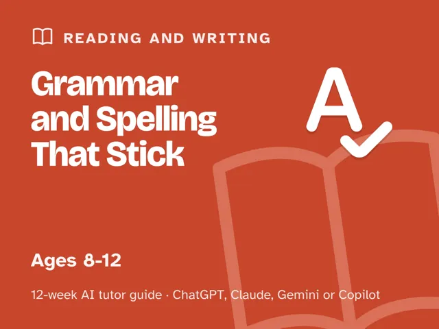
Grammar and Spelling That Stick

The Handy Kid
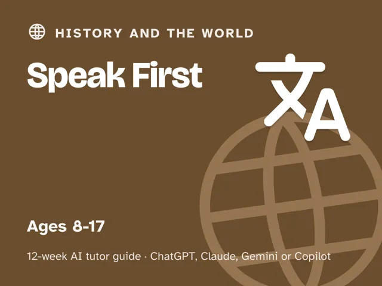
Speak First

Big Kid Skills
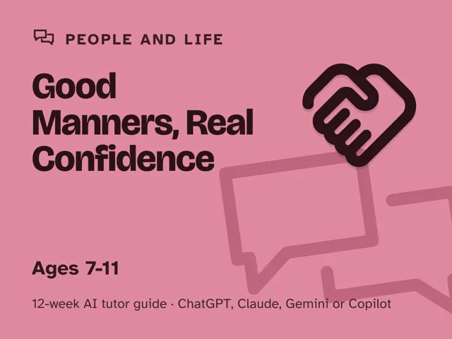
Good Manners, Real Confidence
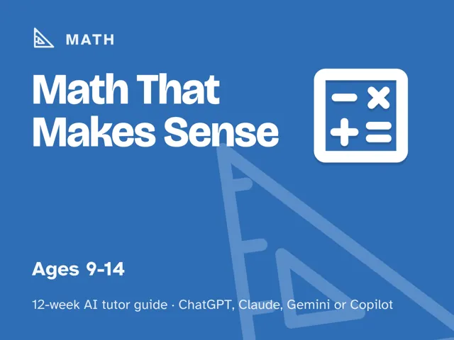
Math That Makes Sense

Don't Get Fooled
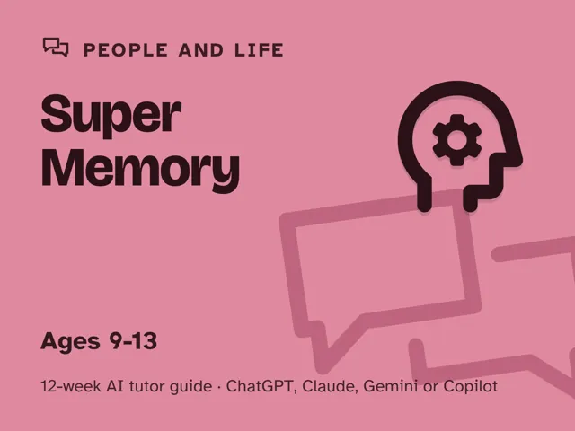
Super Memory
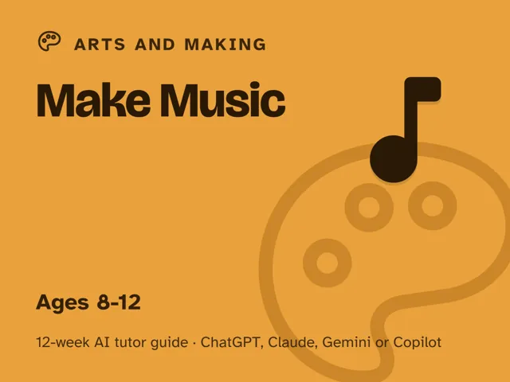
Make Music

Explore the Outdoors
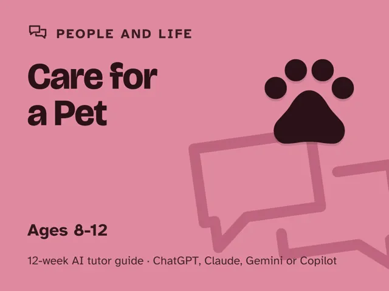
Care for a Pet

Look Through the Lens
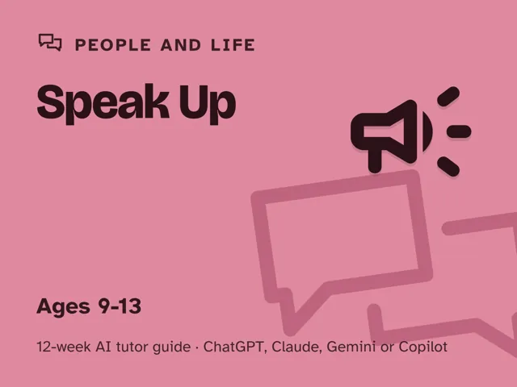
Speak Up
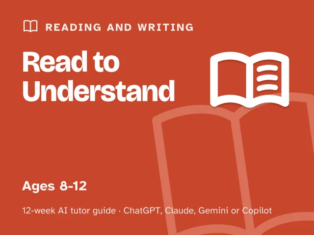
Read to Understand
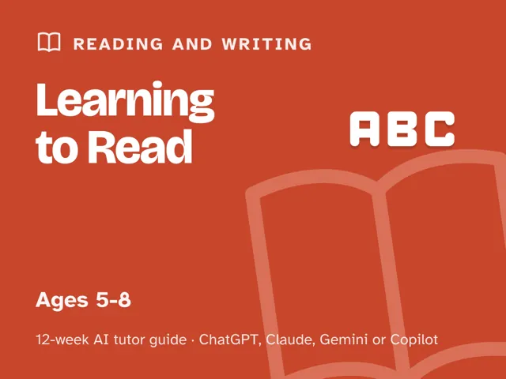
Learning to Read
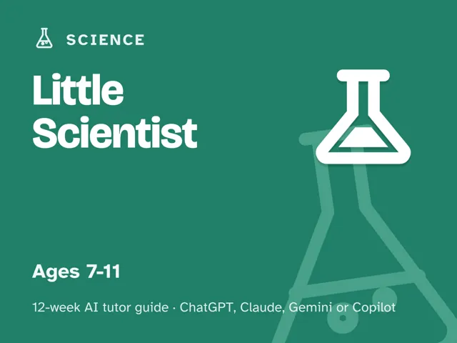
Little Scientist

Ace the Science Fair
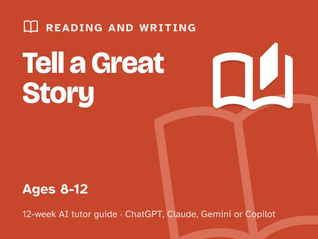
Tell a Great Story
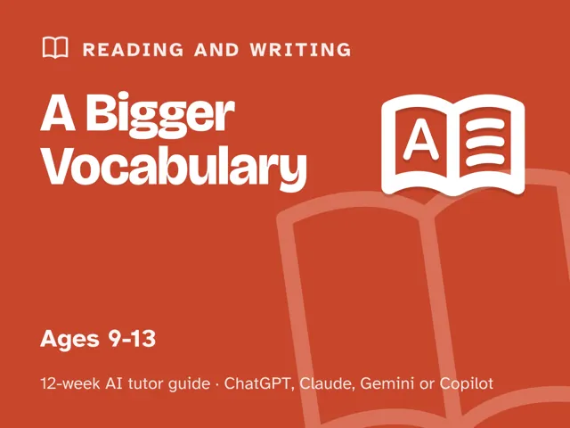
A Bigger Vocabulary
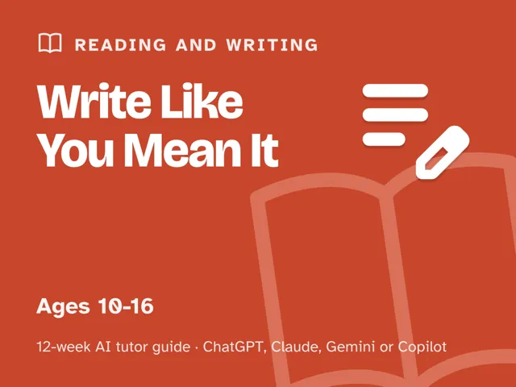
Write Like You Mean It
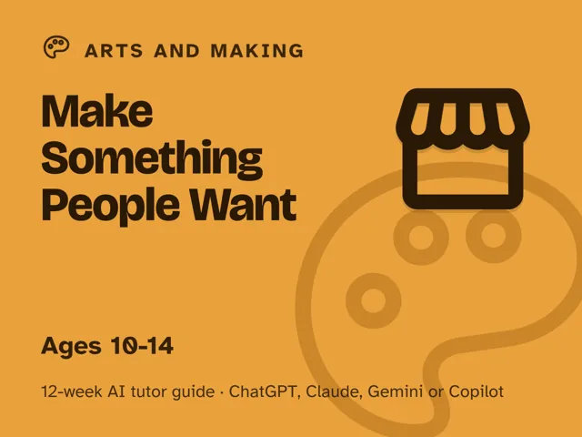